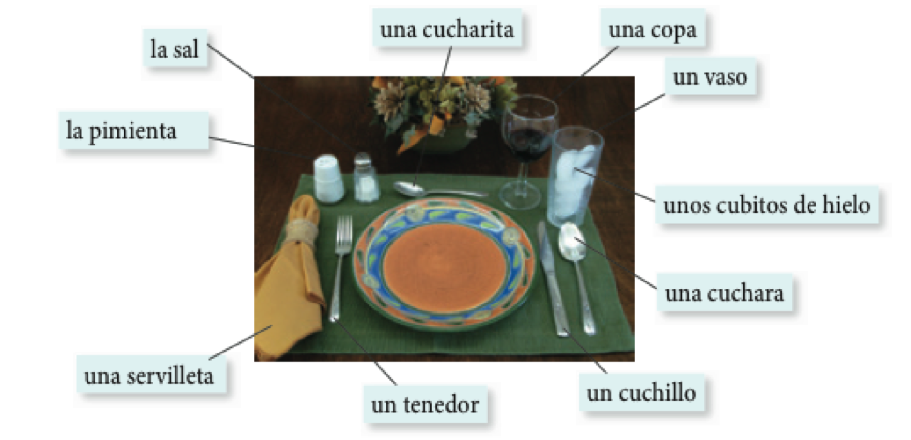
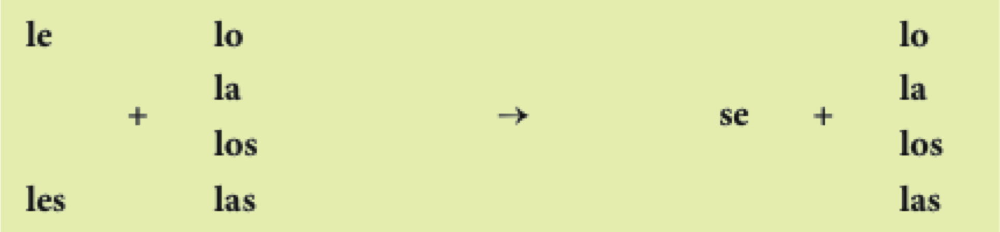

Español 1.5
Capítulo 4
Joseph V. Casillas
Middlebury College: Verano 2015
Repaso - Semana 2
Vocabulario
- El hotel/los viajes
- Más números
- La familia
- Más descripción
- La casa/los muebles
- La rutina
Gramática
- Los verbos irregulares
- Los adjetivos comparativos
- Ser y estar
- Los verbos reflexivos
Gramática
- Los verbos irregulares
- e > ie
- e > i
- o > ue
- u > ue
- verbos -go
- Los adjetivos comparativos
- inferioridad
- superioridad
- igualdad
- superlativo
- Ser y estar
- Los verbos reflexivos
- los pronombres reflexivos
Los reflexivos
Los reflexivos

Los reflexivos

El señor Bean
Con un compañero
- Explicad la rutina diaria del Señor Bean
- Escoged una persona famosa y describid su rutina cotidiana
Capítulo 4: “¡Buen provecho!”
El plan

- Vocabulario:
- Las comidas
- Gramática:
- El participio pasado
- Complemento directo
- Como preparar una presentación con elementos visuales
El desayuno: ¿Qué te gusta desayunar?
El desayuno: ¿Qué te gusta desayunar?

El almuerzo: ¿Qué almuerzas?

La merienda: ¿Qué meriendas?

La cena: ¿Qué prefieres cenar?

¿A qué no puedes adivinar?
En grupos de tres...
- Cread (individualmente) una lista de 5 comidas (desayuno, almuerzo, merienda, cena)
- En turnos, describid una de las comidas de tu lista para que vuestros compañeros la adivnen
Ejemplo:
- Tú: Es un plato de huevos y queso
Compañero : ¡Es una tortilla!
Ejemplo:
Compañero : Es algo que comemos por la mañana con mermelada o mantequilla.- Tú: Es el pan tostado.
En el restaurante: antes de pedir

Para pedir en un restaurante...

Después de comer: la cuenta

Los cubiertos

Ejercicios
- En grupos de 3, describid la situación más buena/mala/divertida/rara/graciosa que habéis tenido en un restaurante
- Después de contar vuestras historias, escoged una y haced un mini diálogo para compartir con la clase.
- Actividad 4-6, p. 135
Descanso (10 minutos)

El participio pasado
El participio pasado
Podemos formar adjetivos a partir de cualquier verbo
Hay una forma para los verbos -ar (-ado)
Hay otra forma para los verbos -er/-ir (-ido)
El participio pasado
quitar la terminación
- hablar > habl
- comer > com
- dormir > dorm
añadir -ado/-ido
- habl + ado = hablado
- com + ido = comido
- dorm + ido = dormido
El participio pasado
El participio pasado funciona bien con los verbos ser y estar y también después de un sustantivo
- El trabajo está terminado
- El español es hablado por muchas personas
- El bicho aplastado en el piso estaba muerto
El participio pasado
Ojo:
- ¡No te confundas con el gerundio!
- Hay formas irregulares
hacer > hechoescribir > escritoabrir > abiertodecir > dichoponer > puestomorir > muertoromper > rotover > vistovolver > vuelto
Ejercicios
- Con tu compañero, escribid 4 oraciones que describan Middlebury usando el participio pasado (2 con ser y 2 con estar).
Los complementos directos
Los complementos directos reciben la acción del verbo


- Voy a probar el flan.
- ¿Qué voy a probar? El flan.
- Veo a nuestro camarero.
- ¿A quién veo? A nuestro camarero.
Para evitar la repitición: los pronombres de complementos directos
- Voy a probar el flan.
- Lo como con frecuencia.
- Veo a nuestro camarero.
- Lo veo enfrente del restaurante.
Los complementos directos
Los complementos directos requieren la concordancia de número y género.
| Persona | Singular | Plural |
|---|---|---|
| 1a | me | nos |
| 2a | te | os |
| 3a | lo, la | los, las |
| sustantivos | lo, la | los, las |
- ¿Cómo quieres el café?
- Lo tomo con azúcar.
- ¿Tienes las galletas?
- Sí, las tengo.
- ¿Tú me ves?
- Sí, yo te veo.
Los complementos directos
La posición de los complementos directos pronominales depende de la forma verbal.
Con un verbo conjugado
- ¿Necesitas el menú?
- No, no lo necesito.
Con un verbo conjugado y un infinitivo
- ¿Vas a servir la torta ahora?
- No, la voy a servir un poco más tarde.
- No, voy a servirla un poco más tarde.
Ejercicios
- Actividad 4-11, p. 138
- Actividad 4-12, p. 138
Repaso
Repaso
- Vocabulario:
- Las comidas
- Gramática:
- El participio pasado
- Complemento directo
- Como preparar una presentación con elementos visuales
TAREA
- Pensar en tu lugar favorito de Middlebury
- Participio pasado
- Descripción gramatical: p. 338-339
- Ejercicio de práctica
- Ejercicio de práctica: GS3-1, p. 339
- Complemento Directo
- Actividad 4-11, p. 138
- Actividad 4-12, p. 138
El plan
Repasar
- Mi lugar preferido
- Los complementos directos
- Los complementos indirectos
- El participio pasado
Mi lugar preferido
Tenéis que...
- escoger vuestro lugar favorito/preferido del campus
- preparar una presentación de 2 minutos (¡máximo!)
- describir el lugar
- explicar por qué os gusta
Pistas para la descripción
- Usad las estructuras que hemos visto en clase
- Exterior al interior, concreto al abstracto
- Ensayad en casa (¡con grabaciones!)
En grupos de 3
- Describid la situación más buena/mala/divertida/rara/graciosa que habéis tenido en un restaurante
- Después de contar vuestras historias, escoged una y haced un mini diálogo para compartir con la clase
- Actividad 4-12, p. 138
Las vocales del inglés

Las vocales del español

Las vocales del español

- Son cortas
- Requieren MÁS tensión articulatoria

Las vocales del español

Las vocales del español

Las vocales del español

Las vocales del español

Las vocales del español

Hay que evitar la schwa

¿Qué ves?

¿Qué comes?
¿Qué ves?


¿Qué ves?


Los complementos directos (repaso)
| Persona | Singular | Plural |
|---|---|---|
| 1a | me | nos |
| 2a | te | os |
| 3a | lo, la | los, las |
| sustantivos | lo, la | los, las |
- ¿Cómo quieres el café?
- Lo tomo con azúcar.
- ¿Tienes las galletas?
Sí, las tengo.
Descanso (10 minutos)
Los complementos indirectos
Los complementos indirectos expresan ¿a quién? o ¿para quién?
Siempre les sirvo vino a mis invitados.
- ¿Qué sirvo?
El vino (el complemento directo)
¿A quién sirvo?
A mis invitados (el complemento indirecto)
Los complementos indirectos
| to/for me | me | to/for us | nos |
| to/for you (sing. fam.) | te | to/for you (pl. fam.) | os |
| to/for you (sing. formal) | le | to/for you (pl.) | les |
| to/for him or her | le | to/for them | les |
¿Me puede traer una cuchara?
Siempre les preparo las galletas.
La posición de los complementos indirectos pronominales depende de la forma verbal
- Con un verbo conjugado
- ¿Cuánto le debo?
- Con un verbo conjugado y un infinitivo
- ¿Me puede traer un tenedor?
- ¿Puede traerme un tenedor?
La duplicación de los complementos indirectos y los pronominales evita confusión
el complemento indirecto = un sustantivo
- Siempre le sirvo platos vegetarianos a María.
- Les voy a servir corvina a mis invitados.
Dos complementos: directo e indirecto
| CD | singular | plural |
|---|---|---|
| 1a | me | nos |
| 2a | te | os |
| 3a | lo, la | los, las |
| CI | singular | plural |
|---|---|---|
| 1a | me | nos |
| 2a | te | os |
| 3a | le | les |
Dos complementos: directo e indirecto
Mami, ¿me haces unas galletas?
Sí, te las hago esta tarde.
Dos complementos: directo e indirecto
Mami, ¿me haces unas galletas?
- ¿Qué haces? unas galletas (el complemento directo)
- ¿A quién sirvo? a mí (me) (el complemento indirecto)
Sí, te las hago esta tarde.
- Te = para ti
- las = las galletas
Le y les cambian a se a veces

- ¿Me puede traer un menú?
- Ahora se lo traigo.
¡Cálmate!
Tu amiga Sofía va a montar una fiesta para su novio. Ella está un poco preocupada con los preparativos y tú tienes que calmarla. Con un(a) compañero(a) de clase, seguid el modelo y completad los diálogos. ¡Ojo! Hay que usar participios pasados en las respuestas.
- Sofía: ¿Quién va a decorar el pastel?
- Tú: ¡No te preocupes! El pastel ya está decorado.
¡Cálmate!
Sofía: ¿Quién va a decorar el pastel?
Tú: ¡No te preocupes! El pastel ya está decorado.
- ¿Por qué no preparamos los sándwiches ahora?
- ¿Quién va a poner la mesa?
- Ahora tenemos que hacer las camas.
- ¿Cuándo vamos a envolver los regalos?
- Debemos abrir las ventanas; hace calor hoy.
- ¿Hay más platos sucios? Tenemos que lavarlos antes de que lleguen los invitados.
El participio pasado (repaso)
quitar la terminación
- hablar > habl
- comer > com
- dormir > dorm
añadir -ado/-ido
- habl + ado = hablado
- com + ido = comido
- dorm + ido = dormido
El participio pasado (repaso)
Ojo:
- ¡No te confundas con el gerundio!
- Hay formas irregulares
hacer = hechoescribir = escritoabrir = abiertodecir = dichoponer = puestomorir = muertoromper = rotover = vistovolver = vuelto
Ejercicios
- 4-21, p. 145
Repaso
Repaso
- El participio pasado
- Los complementos directos e indirectos
Tarea
- Preparar presentación oral #2